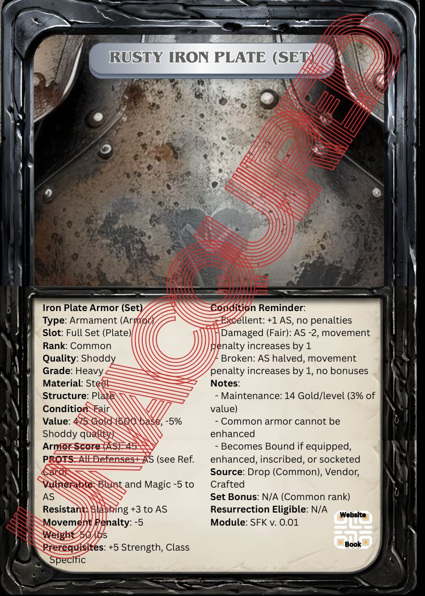
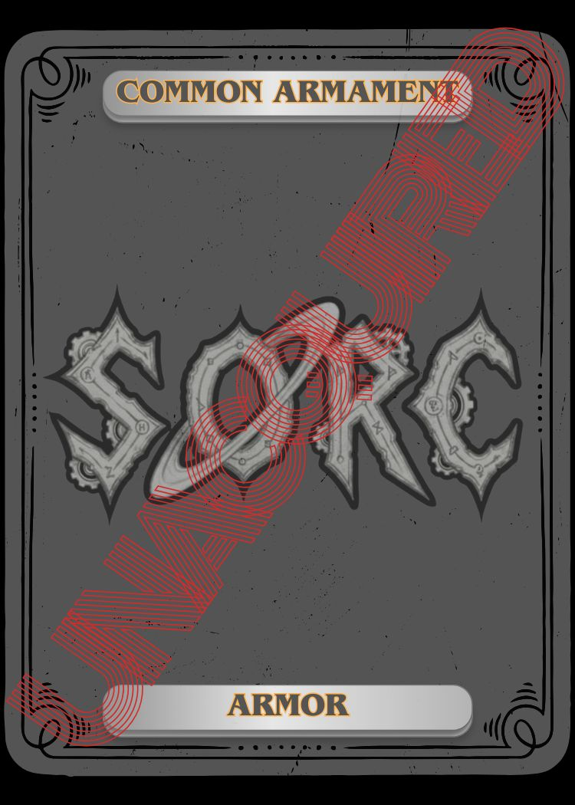
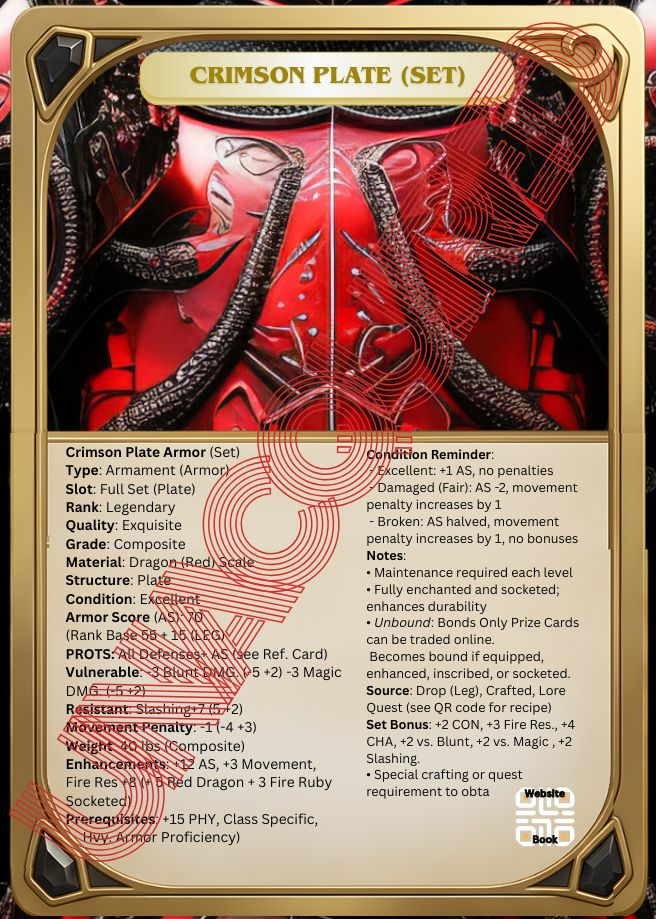
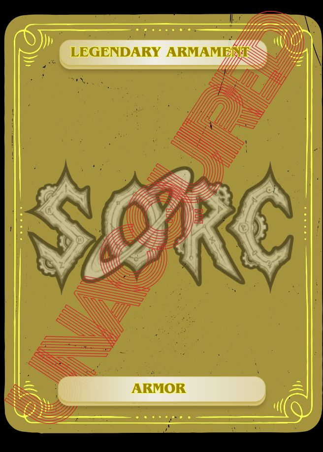
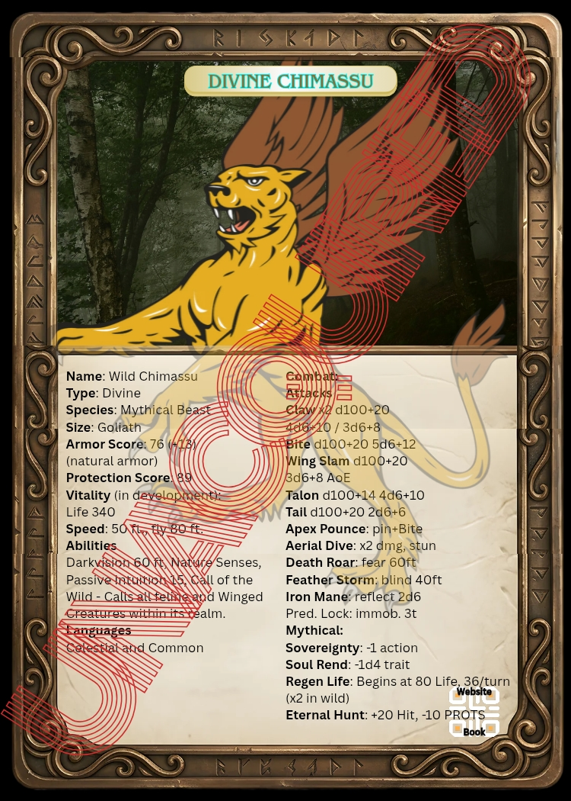
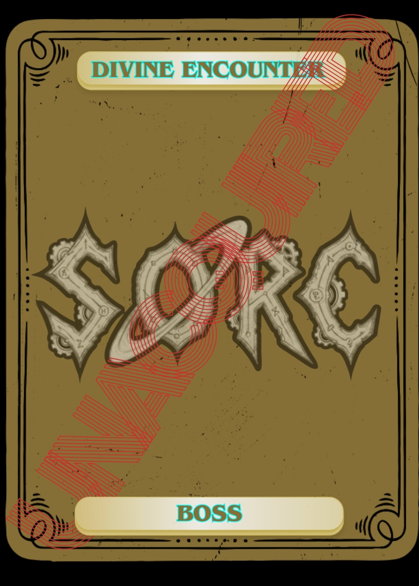
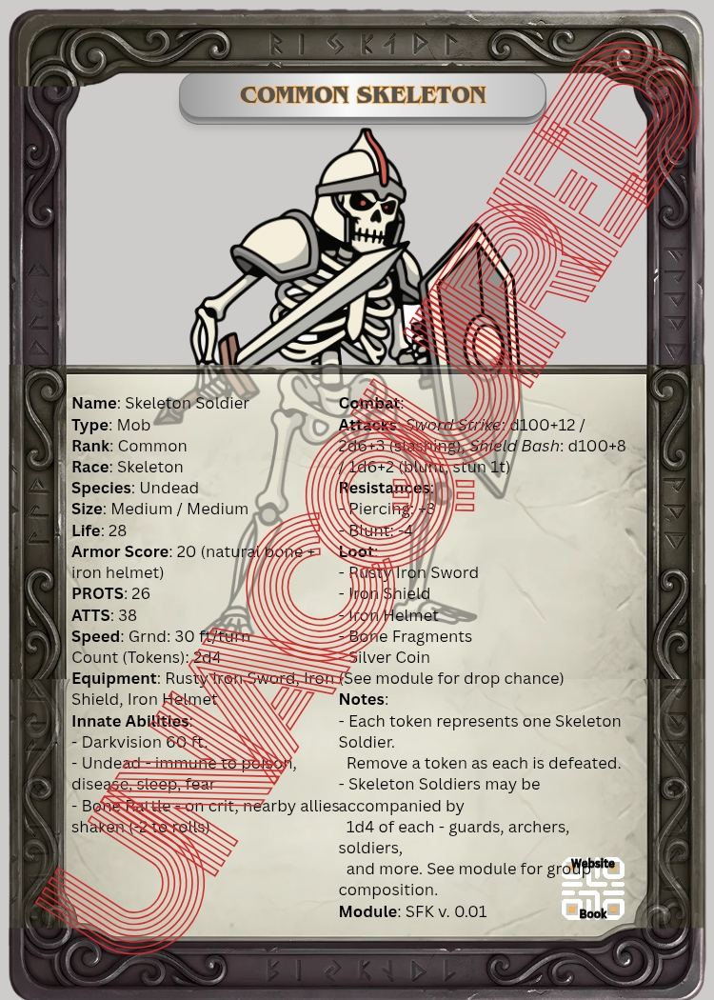
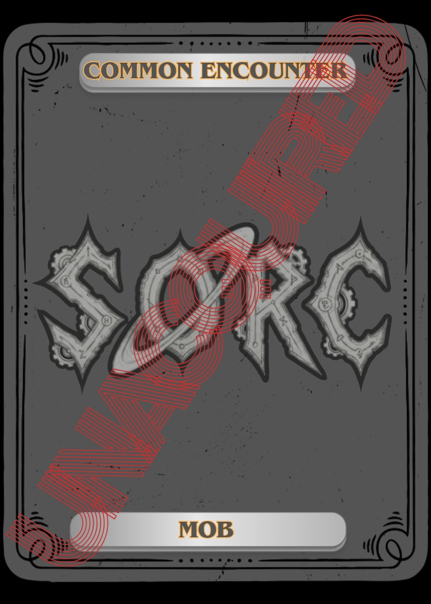
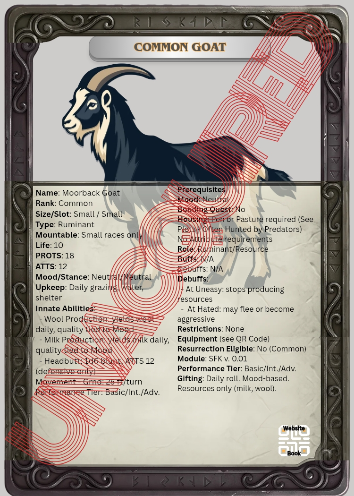
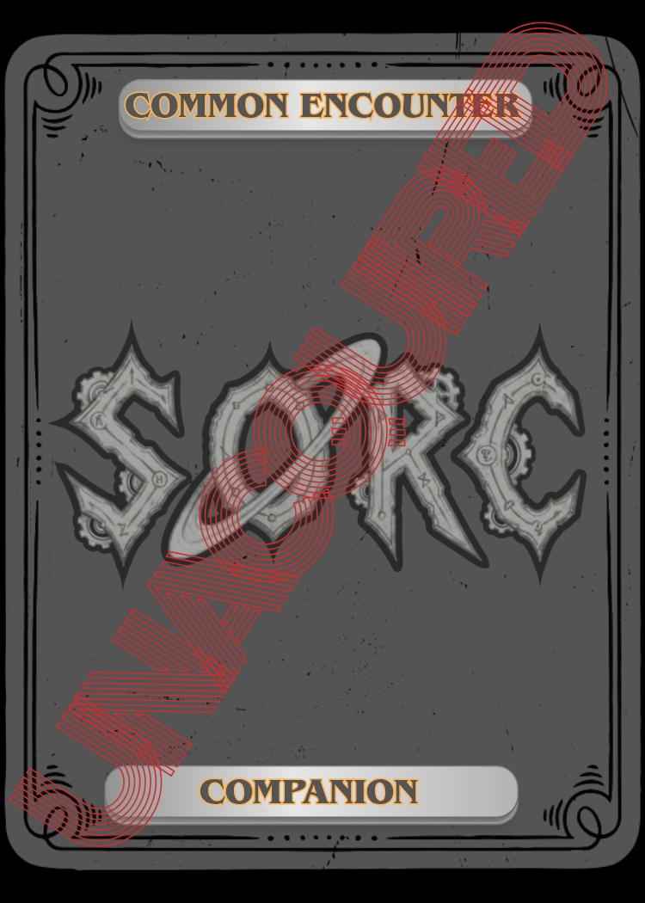

Currency System
Essentia uses a structured currency system based on the value and weight of the element used to mint each coin. Not all planets use currency - some use advanced credit systems.
| Coin | Conversion | Use |
|---|---|---|
| Silver Coin | Base coin (~180/lb) | Basic unit; everyday purchases, taxes, small expenses |
| Gold Coin | 1 Gold = 50 Silver | Substantial purchases, major economic transactions |
| Electrum Coin | 1 Electrum = 50 Silver (50 Gold/ingot) | Moderate value increase over silver |
| Platinum Coin | 1 Platinum = 100 Silver (1,000 Gold/ingot) | Estates, vehicles, spacecraft, one-of-a-kind relics |
Characters with Vault accounts can write signed currency notes (checks) for very high-value transactions. Zailister is the universe's reserve currency hub. The last 3 planets (Futurem, Omne, Tredici) use laser-secured credit systems only and view universal coins as worthless.
Earth Elements - Gems
Gems are used to enhance armament stats via socketing. The most valuable are found on Ignis, closest to Adoria. Quality and condition dictate value. Perfect gems only hold attributes for the one they were crafted for.
| Gem | Value Range | Power |
|---|---|---|
| Diamond | 1,000-5,000 Gold | Clarity, focus, protective enchantments; boosts item durability |
| Sapphire | 300-1,000 Gold | Amplifies water and ice magic; increases wisdom and perception |
| Ruby | 400-1,200 Gold | Strengthens fire and passion spells; boosts vitality |
| Emerald | 300-1,000 Gold | Enhances nature magic, healing, and regeneration |
| Topaz | 200-600 Gold | Grants resistance to lightning; boosts agility enchantments |
| Amethyst | 250-700 Gold | Improves mind-affecting spells; wards against corruption |
| Obsidian | 20-200 Gold/block | Sharp weapons, dark wards, shadow enchantments |
| Garnet | 100-500 Gold | Boosts stamina and protective spells |
| Citrine | 50-300 Gold | Amplifies energy, luck, and prosperity enchantments |
| Nyxium | 1,500-6,000 Gold | Mastery over shadow magic; relics and dark enchantments |
| Infernium | 1,500-6,000 Gold | Intense elemental fire magic; boosts fire enchantments |
| Aetherstone | 2,000-10,000 Gold | Immense energy source; futuristic enchantments |
| Moonstone | 1,500-4,000 Gold | Enhances illusion, dream, and light magic (spotted during lunar events only) |
Earth Elements - Metals
Metals are foundational materials throughout Essentia, valued for strength, versatility, and magical conductivity.
| Metal | Harvesting Technique | Value | Power | Drop on Failed Modification |
|---|---|---|---|---|
| Pyronium | Extracted from magma flows | 150-300 Gold/ingot | Fire-resistant; ideal for heat-resistant weapons and armor | Pyronium scrap |
| Quantite | Harvested from interstellar dust fields | 300-600 Gold/ingot | Extremely valuable; used in advanced crafting and technology | Quantite scrap |
| Lead Alloy | Standard smelting | 1-5 Gold/ingot | Blocks magical detection; used in anti-magic containers | - |
| Iridium | Found in meteorite fragments | 150-250 Gold/ingot | Resists magical and elemental damage; used in legendary items | - |
| Orichalcum | Smelted from rare enchanted ore | 250-400 Gold/ingot | Greatly boosts enchantments and elemental affinity | - |
| Aetherium | Synthesized in magical laboratories | 400-800 Gold/ingot | Source of immense energy; powers world-altering devices | - |
Organic Elements
Harvested from creatures, essential for rituals, enchantments, and alchemy. The following elements have spell, potion, and/or scroll versions. When these materials are used to cast, Mana is not consumed.
| Material | Description (omits mana costs) |
|---|---|
| Bone Dust | Necromancer, dark sorcerer, witch and so on rituals - raising the dead or cursing enemies. |
| Bat Wings | Grant abilities like flight, invisibility, or transformation. Used in talismans, symbolic art, and remedies. |
| Elderwood Ash | Sacred residue from the Elderwood Tree. Used by shamans in place of mana; channels ancestral and primal energies. |
| Fairy Wings | Used by evil entities in dark rituals and enchantments to grant flight or illusions. |
| Reptilian Tail | Provides regeneration properties for certain classes, like witches. Stronger effects if still moving. |
| Beast Blood | Used in powerful potions and rituals that enhance strength, resilience, or grant beast-like abilities. |
| Star Crystals | Captured fragments of fallen stars; used to enhance celestial weapons or invoke Divine favor. |
| Moonflower Petals | Used in potions for invisibility or night vision. Harvested under moonlight from rare, glowing flowers. |
| Luckstone | Gives +1 through +3 chance while enhancing armaments. Armaments may still break. Once used, value drops to a common stone. |
| Blessed Alloy | Gives 100% chance of crafting target. Must match the rank of the item being crafted. Legendary alloys work on any rank. Very rare. *The alloy disregards the chance of failure unless interrupted. |
Sci-Tech Elements
Advanced sci-tech materials mined, synthesized, or infused through high-energy and arcane processes. Form the building blocks of data chips, starship components, energy sources, and high-tech weaponry.
| Material | Harvesting Technique | Value | Power | Drop on Failed Modification |
|---|---|---|---|---|
| Plasma Crystal | Extracted from stellar plasma fields | 50 Gold/core | High-energy plasma source for starship engines and plasma weaponry | Plasma shard |
| Laser Crystal | Mined from asteroid belts; refined with high-energy alchemy | 30 Gold/crystal | Focuses and amplifies laser beams for weapons or cutting tools | Laser shard |
| Quantum Alloy | High-energy alchemical synthesis of rare space minerals | 75 Gold/batch | Crafts advanced circuit boards, processors, and energy conduits | Quantum alloy scrap |
| Photon Core | Photonic energy condensates with rare crystalline materials | 40 Gold/core | Energy source for photon-based weapons and propulsion systems | Photon shard |
| Dark Matter Infused Ore | Collected from cosmic dark matter reservoirs via ancient alchemy | 100 Gold/infusion | Reinforces armor and weapons; grants dark energy amplification | Dark matter fragment |
| Cryo-Exotic Alloy | Smelted from space metals infused with cryogenic magic | 35 Gold/ingot | Crafts heat- and cold-resistant plasma weapons and armor | Cryo alloy scrap |
| Starsteel | Forged from space minerals fused with cosmic energy | 45 Gold/ingot | Lightweight, ultra-strong material for starship hulls, weapons, and armor | Starsteel fragment |
| Synthetic Fiber | Nano-engineered polymers infused with magic for durability | 10 Gold/roll | Used in flexible stealth suits, armor, and high-tech gear | Synthetic fiber shard |
| Energy Conduit | Conductive crystalline materials infused with plasma and arcane energy | 25 Gold/unit | Facilitates high-capacity energy transfer in ships and weapons | Conduit fragment |
| Nano-Infused Crystal | Crystals infused with nano-machines and arcane energy | 60 Gold/crystal | Creates self-repairing technology or enhanced energy storage | Nano crystal shard |
| Voidstone | Mined from shadowed cosmic voids; infused with dark magic | 80 Gold/stone | Manipulates space, teleportation, or shadow energy | Void shard |
| Stingers | Found on Futurem, Omne, and Tredici | - | Shimmering metallic purple hue; lattice structure makes it incredibly strong yet lightweight. Essential for advanced technology and spacecraft construction. | - |
Prism Elements
Captured when a creature is slain by an attack, spell, or effect linked to the Soul Prism, or when a soul-binding ritual is completed. Used in advanced rituals and enchanted crafting.
| Prism | Harvesting Technique | Value | Power |
|---|---|---|---|
| Light Prism | Forged from pure light-infused minerals | 60 Gold/prism | Focuses and refracts pure light or magical energies. Illuminates dark areas; may project illusions. |
| Ethereal Prism | Made from rare spirit shards found in the spirit realm | 200 Gold/shard | Captures or interacts with spiritual entities; used in communication with spirits or teleportation. |
| Void Prism | Crafted from shadow-infused obsidian and voidstone | 300 Gold/prism | Manipulates void or null energies; used for banishment or containment of evil entities. |
| Elemental Prism | Made with materials representing fire, water, earth, and air | 100 Gold/prism | Capable of creating gentle elemental activity. |
Trials of Combat Currency
The Trials of Combat are competitions where adventurers face battles and challenges to earn points and rewards. Led by Field Marshalls, participants can earn Honor, Valor, and Auctorati Points, which are spent on gear, potions, and knowledge. The trials include arenas, coliseums, and strategic objectives, emphasizing skill and teamwork for powerful rewards and reputation.
| Currency | Earned In | Spent On |
|---|---|---|
| Trial Coins | Combat trials | Trial vendor items only; not used in general transactions |
| Honor Points | Proving Grounds | Exclusive gear sets and enhancements for trial challenges |
| Valor Points | Arena | Formidable weaponry, protective gear, and combat consumables |
| Auctorati Points | Coliseum | Dangerous armament sets, ancient potions, scrolls of forgotten knowledge |
Action Resolution
In SORC, every action is resolved by rolling a D100 (percentile die) against a target threshold set by the difficulty of the task. If the roll meets or exceeds that threshold, the action succeeds. If it falls below, it fails.
- The player performs the action
- The difficulty sets the threshold
- The roll determines the outcome
Target Number
A predefined value that represents the difficulty of an action or challenge. To succeed, players must roll a D100 and meet or exceed this target number. For challenges outside of combat, this is called the DIFS (Difficulty Score), which sets how hard it is to overcome obstacles like disarming traps or hiding. In combat scenarios, the PROTS (Protection Score) functions as the target number an attacker must meet or surpass with their attack roll to land a Hit on an opponent. In both cases, players roll a D100, add relevant modifiers, and compare the result to the Target Number to determine success or failure.
Determine the Target Number
Start with a base percentage set by your character sheet or the GM (e.g., 40% for disarming a trap).
Modify the Chance
Add bonuses or subtract Penalties determined by; gear, buffs, Attributes, Traits and scores of things like talents and skills. The total after modifications becomes your final target number.
To determine D100, roll two ten-sided dice to generate a number from 1 to 100. In a D100 roll, one ten-sided die (usually of one color) represents the tens digit, and the other (of a different color) represents the ones digit, which together form the result from 1 to 100. For example, if the red die (tens) shows 4 and the black die (ones) shows 7, the total roll is 47.
Compare the Roll
If the roll is equal to or greater than your target number, the action succeeds. If the roll is less than that value, it fails.
Examples
A Rogue is trying to disarm a trap and the base chance of 40% (difficulty score - DIFS). From the Thief talent tree, the Rogue has a score of 5 in trap tech (5), granting a +5% bonus, so the rogue only needs to roll a 35 (since his score of 5 added equals the DIFS of the trap, 40, but he doesn't know this). The player rolls a D100; if they roll 40 and easily disarms the trap.
A Monk, during combat decides to use his Trait Deception which he has a score of 4 in to play dead to avoid further loss of Life. He is trying to fool a wizard with a Trait score in Intuition of 4, so their bonuses balance out. They are also the same level, and the DIFS to fool the wizard is 50. The player rolls D100 and rolls a 54, so the Monk successfully fools Hostile Creatures and avoids being surprised.
A Bast fighter with the Trait Vigilance of 5 boosts their instinctive awareness by 5. The GM sets a base chance of 50% to avoid surprise. The player rolls D100 and hits a 60, so the total is 65 and the party easily avoids being surprised by a group of sand men fighters. If the group trying to surprise the group were strategists, rogues and an assassin of a thieve's guild, the DIFS would be higher, maybe 85% to suspect the ambush.
Mapping
Module based adventures are unique campaigns where the worlds of SORC change at your party's hands and desires. Continue campaigns that ended with periodic expansions.
This map system is designed to allow parties near one another to communicate with each other as long as they've uploaded their location(s) to our servers, and have an available means to reach one another. One way, for instance, would be a soldier class's Ability for "call to arms," a warrior's "regroup" Ability or a scout's, from the vocational tree Scout's Ability, "call forth," which isn't as powerful as "call to arms," by default but serves a similar purpose. Players of other parties will have to accept your attempt to call them, as GMs communicate with one another.
Various sizes and designs of graph paper will be used to coordinate movement, combat and traveling. See the three sections on combat, movement and traveling below for more on this.
Reading the Map
The universe, Essentia. Maps are designed to display key areas that players will step into during their adventures in this geological order from largest to smallest: Planet, Continent, Region, Territory, Area and Space.
| Scale | Example | Description |
|---|---|---|
| Planet | Zailister | Large, round celestial bodies that orbit a star, shine by reflecting light, and have cleared their orbital path of other debris. |
| Continent | Nivis | Sovereign masses of land that contain all the following below. |
| Region | Shadowfen | Large areas that divide continents. |
| Territory | The Pearl Coast | Large areas of regions, such as settlements and even metropoli. |
| Area | Ase's Crypt (pyramid) | Places within a character's view. |
| Space | The elevator | Structures and small areas within the character's reach. |
Experience & Rank
In SORC, your character's growth and the challenges you face are guided by two parallel systems, Class Level and Rank.
Class Level (1-30+)
Your Class Level represents your accumulated experience (XP) and unlocks new combat Abilities, talents, skills, and Traits (TST), as you advance from Level 1 up to Level 30, and beyond. You'll earn XP from combat, exploration, roleplaying, crafting, and achievements - either shared with your party or awarded individually for notable actions. At the table's preference, campaigns may use milestone leveling, where story events guide your advancement.
Rank
Rank is measured by Rank Points (RP) and reflects your hero's reputation, achievements, gear, the strength of your Companions (companions and allies) and more. As you gain RP through exceptional actions and exploration, your Rank advances in this ascending order: Pauper, Peasant, Commoner, Adventurer, Hero, Elite, Master, and Legend. Gaining or losing key armaments or Companions can raise or lower your Rank. Hostile Creatures and NPCs have Ranks too, and group challenges are balanced by averaging the Ranks of all participants rank for rank, for instance a pauper matches to a Common NPC. In this sense, Rank Points are earned as your character gains power through Abilities, armaments, Companions and more.
Pauper - Peasant - Commoner - Adventurer - Hero - Elite - Master - Legend
Encounter balancing in SORC is designed to reward you for taking on challenges that match your Abilities. Defeating Creatures or foes of similar Rank awards standard XP. Overcoming far stronger opponents yields greater rewards, while easy or trivial Encounters grant little or no XP. Creatures, either friendly, neutral or hostile are classified in this ascending order: (Common, Uncommon, Rare, Unique, Heroic, Elite, Legendary, Divine), making it easy to judge the difficulty and potential rewards of an Encounter. NPCs Unique and above have fictional names and have special Abilities and gear.
Characters cannot use items that are of a rank above their own.
Rank is a measure of a character's overall reputation and power, determined by accumulating Rank Points (RP) from achievements, exceptional actions, exploration, acquiring armaments, gaining Companions, and increasing reputation. RP is awarded for significant accomplishments and changes in resources, and can be lost if key armaments, Companions, or reputation are diminished. Rank governs access to certain Abilities, quests, and items, and is used by the GM to determine the difficulty and rewards of Encounters, as well as to balance challenges between individual characters or groups.
Game Features
Home and Family
Buy plots of land as small as a hut or tent, and build as large as an estate or castle, even a town. Complete live quests and meet your love. Have children and create a family. Make sure they're safe at home by collecting Companions and making friends with townsfolk. Retire and enjoy your home, continuing to play your character leisurely.
Turn Timer
Each player has 2 minutes to complete their turn once it begins. If the player does not act within this time, they forfeit their turn, and play passes to the next participant.
Turn Forfeit
Failing to act within the allotted time results in the loss of the current turn, ensuring gameplay remains swift and engaging.
Encounter Tokens
Encounter Tokens are used to define a fixed or randomly generated number of entries of an Encounter. For instance, there are 5 mob cards and a boss card; each mob card can be a value of x ≥ 1, either described on the card, directed in the module, or determined by the GM.
Example: The party has entered Queen Goblin's den, and she is accompanied by 1 steward, a jester, 4 goblin guardsmen and 6 scouts. There is only one Mob Card (see SORC Cards below) for each of them (so each has its own stats), but each card has a number of monster Tokens to represent the number of mobs, so there are 6 Tokens on the goblin scout Mob Card. Each time one is defeated, whether it's killed, runs, etc, the Token goes to the boneyard (see below). This same rule applies to anything, for example, the goblin den is also booby trapped x 12, so 12 *Encounter Tokens.
*This is why they're called Encounter Tokens and not just "mob tokens." See Mob, Boss and Mechanical Cards below.
The Boneyard
The boneyard is where passing Companions, broken gear, spent items and other Cards that are incapacitated for an indefinite amount of time go. Once resurrected, repaired or re-stocked respectively, the Cards go back to the table.
SORC Cards
Players use a comprehensive Card-based system to track their Spells and Abilities, Armaments, Companions and more. Some upgradable Cards, such as Armaments, will be paired with a detailed reference Card, also called a "ref. Card," for tracking enhancements, modifications, buffs, curses, and special Traits, allowing characters to customize and adapt their gear and allies over time. Basic Cards that are stacked also use a reference chart to keep track of the value consumed. Mob Cards are often in groups and the amount of Mobs within any given group is represented by Tokens.
Each Box Set includes the essential SORC Cards for its respective module's level or rank, along with information such as stats, lore, reference codes and QR codes that guide players to book or online pages that have further information of each card respectively. Basic printable cut outs of SORC Cards are available at our website, along with a PDF lighter version of the game.
*Recipes are needed to craft items, so any item that can be crafted comes with a recipe and each recipe has instructions, life and a material list. Items that cannot be crafted can be discovered in the world. Every SORC Card NEEDED in a module to perform any talent, skill, or Trait comes with a basic Common punch out style SORC Card to ensure a seamless and enjoyable gaming experience.
Uncommon Cards are included in box sets as well, but Uncommon Cards are more Rare. For example: you've created a Cleric that can begin his adventures proficient in all 1h blunt weapons, so the box set would have basic Common weapons, such as: 1h hammer and 1h mace, but a 1h flail, a bit stronger and maybe more exquisite, is less Common (Uncommon). Now you can still retrieve the flail, but not from every vendor in the game, you'd need to find it.
Why Use SORC Cards?
SORC is a pretty crunchy game with a lot of elements and features, so the Cards make things more manageable. There are also a lot of elements in the game, including spells, abilities, and items available, so instead of flipping through pages, Players and GMs will have their own Cards that work in conjunction and are referenced to books. They are also designed to speed up encounters, ensuring that players can access essential information at a glance without flipping through rulebooks. Each card includes QR codes for trading digital versions and linking to online resources, such as lore, crafting recipes, and supplemental materials, as well as book and page numbers for deeper reference.
Beyond gameplay, cards also enhance the narrative and personalization of the game, and even while not directly in play, they are showcased in the home, including; gardens, trophy rooms, closets and other spaces.
Acquiring SORC Cards
Cards come as default Punch Outs in each adventure module. Each set of Cards in a box set is determined by its module's level, for instance; module v. 0.01 is for levels 1-5 and includes the basic Common Cards. Each Card is paired to its own Card quest, with some as simple as: "go see town merchant to acquire your equipment..." Lore Cards, which also come in every box set, are paired to special Lore Quests already present in the module - the Card is what guides the party to them (refer to Lore Cards below). GMs can distribute default Cards in any manner they see fit.
| Module Level | Card Rank Included |
|---|---|
| 1-5 | Common Cards |
| 5-10 | Uncommon Cards |
| 10-15 | Rare Cards |
| 15-18 | Unique Cards |
| 18-21 | Heroic Cards |
| 21-24 | Elite Cards |
| 24-28 | Legendary Cards |
| 28-30 | Divine Cards |
The Character must be at the same rank as the Lore Card to use it. See Ranks above. Looking at the table above, each Module only comes with Cards of a rank associated with the module's level. This is done with the assumption that players have already developed a character up to the level and rank of their newly purchased module. This will also discourage cheating since there is no other way to acquire default Cards that are packaged onto our box sets.
Each Card rank Rare and above is paired with a quest or other method of obtaining it. Each Card also has its own Code for easy reference to our books and servers, its own lore, and a code.
Armament Cards (TAA)
These Cards work similarly in that they are restricted by class. There will be five Punch Out sets for each basic armor and weapon type with beginner sets and players will evolve their Armaments, even as sets with bonuses, as they enhance their Armaments. This box set heavily prepares 4 players and a GM for play but up to five or six players could participate. Each set will come with sheets of punch out SORC Cards. Armaments will each come in sets of 4 in the case that 4 players choose similar main classes. This means there will be 4 of the same leather set, 4 of the same plate set, 4 of the same chainmail set and so forth.
The weapon choices below require class proficiency. For instance, a one handed magic dagger can only be used by certain classes, at certain levels or their class path, such as; level 1 main class mage.
Technologically Advanced Armaments (TAA) are high-tech weapons (TAW) and body armor (TABA) first engineered on the 12th planet, Omne and later, planet by planet toward Adoria, the entire universe. Omne still produces the most advanced versions in existence. TAAs are constructed from specialized materials most rich and even exclusive to the last 5 planets, each with its own exclusive materials. Starsteel, Quantum Alloy, and advanced Synthetic Fibers, and are available in various grades including Composite, Dense, and Heavy, each offering different balances of protection and mobility. These armaments often integrate energy systems, adaptive shielding, and modular enhancements for superior performance. Highly sought after and requiring specialized training to use, TAAs exemplify the pinnacle of technological progress in combat equipment.
Armor Cards
Below are examples of a Common Full Plate Set included in a level 1-5 Box Set, followed by a Crimson (Red) Scale Legendary Set included in a Level 24-28 Box Set as the Rules state.


Common Rusty Iron Plate - Armor Card


Legendary Crimson Plate - Armor Card
Set Bonus
Armor comes as a complete set. When all pieces of a set are equipped, the character gains the full set bonus listed on the Armor Card. Set bonuses provide additional stats beyond the individual piece bonuses - such as attribute bonuses, resistance bonuses, or combat bonuses specific to that set. Only Heroic rank and above may have a set bonus. Common, Uncommon, Rare, and Elite sets do not include set bonuses.
Only gloves and boots may be replaced from a set. Replacing either breaks the set, resulting in the loss of any full set bonus. When this happens, the character gains the benefits of the new gloves or boots, including any magical enhancements they carry, but loses the full set bonus and the bonus of the replaced piece. Enchanted gloves or boots may not be further enhanced, but the rest of the set may be. Gloves and boots are limited to one enhancement per their existence.
Bound and Unbound Armaments
| Status | How Acquired | Notes |
|---|---|---|
| Unbound | Drop, Auction | Can be traded online. Becomes Bound if equipped, enhanced, inscribed, or socketed. |
| Bound | Crafted, Quest, Cash Purchase, Vendor, Player Trade | Cannot be traded once bound. Bound to the character it was acquired or enhanced by. |
Armor Base Value
The following base prices apply to Common rank full armor sets. Rank multipliers and quality adjustments are applied on top of the base price. Base price is determined by structure only - grade and material do not affect the base price formula. Common rank armaments cannot be crafted from rare or exotic materials (e.g. a Common fur armor cannot use whale fur - material rarity must match rank). This keeps base prices consistent across rank tiers. Composite armor price varies significantly by material - Dragon Scale, Mithril, and Adamantium all differ in cost, covered in the GM Codex. Technologically Advanced Body Armor (TABA) and Technologically Advanced Weapons (TAW) cost 10% more than their standard structure equivalent (e.g. TABA Heavy Plate: 1,200 + 120 = 1,320 Gold).
| Armor Type | Base Price (Common, Full Set) | TABA/TAW (+10%) |
|---|---|---|
| Delicate (e.g. Cloth, Silk) | 5 Gold | 6 Gold |
| Light (e.g. Leather, Hide) | 10 Gold | 11 Gold |
| Medium (e.g. Chain) | 60 Gold | 66 Gold |
| Heavy (e.g. Plate) | 1,200 Gold | 1,320 Gold |
| Dense | 2,000 Gold | 2,200 Gold |
| Composite | 3,000+ Gold (varies by material) | 3,300+ Gold |
| Rank | Price Multiplier |
|---|---|
| Common | x1 (base) |
| Uncommon | x3 |
| Rare | x8 |
| Heroic | x25 |
| Unique | x75 |
| Elite | x200 |
| Legendary | x1,000 |
| Divine | Not for sale |
Apply the rank multiplier to the base price, then apply the quality percentage adjustment to get the final value. Example: Heavy Plate (1,200 Gold) at Heroic rank (x25) = 30,000 Gold base, then adjusted by quality roll. For ranked armaments, value is always determined by structure - not grade or material. A Legendary Composite Dragon Scale Plate uses the same Heavy Plate base (1,200 Gold) as any other Legendary Plate.
Armor Quality
The quality of crafted armor (Shoddy to Masterful) directly affects its value. Higher quality generally provides better protection and potential for enhancements.
| Armor Quality | Roll d100 | Value Change |
|---|---|---|
| Shoddy | 1-7 | -5% value decrease |
| Good | 8-30 | 0% value |
| Extravagant | 31-60 | 3% value increase, +1 CHA |
| Exquisite | 61-80 | 4% value increase, +2 CHA |
| Masterful | 81-100 | 5% value increase, +3 CHA |
The armor's rank (Common to Divine) indicates its origin, craftsmanship level, or discovery status and influences its overall condition and potential enhancements. Common rank base AS by armor type is listed below - all higher ranks add their bonus on top of the Common base:
| Armor Type | Common Base AS |
|---|---|
| Delicate (Cloth, Silk) | 5 |
| Light (Leather, Hide) | 15 |
| Medium (Chain) | 30 |
| Heavy (Plate) | 47 |
| Dense | 60 |
| Composite | 70 |
- Common: (shoddy, good, or extravagant). Base AS as listed above.
- Uncommon: (shoddy, good, or extravagant). +3 to Base Armor Score.
- Rare: (shoddy, good, or extravagant). +5 to Base Armor Score.
- Heroic: (good, extravagant, or exquisite). +8 to Base Armor Score.
- Unique: +10 to Base Armor Score.
- Elite: (good, exquisite, or masterful). +12 to Base Armor Score.
- Legendary: (exquisite or masterful). +15 to Base Armor Score.
- Divine: Obtained only by Lore Quests, and very rarely discovered or dropped. Characters must meet Proficiency of Divine Armor and must have it unattuned from its original bearer, then have it attuned to themselves. +20 to Base Armor Score.
Armor Condition
Armor condition is determined when received and cannot be repaired until the next level of progression - repair is handled as part of the maintenance fee. Three conditions apply:
| Condition | Roll d100 | AS Effect | Movement | Notes |
|---|---|---|---|---|
| Excellent | 81-100 | +1 AS | No penalty | No restrictions |
| Fair (Damaged) | 11-80 | -2 AS | Movement -3 | No restrictions |
| Broken | 1-10 | AS halved | Movement halved | No enhancement bonuses apply |
Condition in Play: Armor condition degrades during play in two ways. If a character hits 0 Life during an encounter, their armor degrades to Fair - taking the Damaged penalties above. If a character is killed, their armor degrades to Broken - taking the Broken penalties above. Armor cannot be repaired mid-session. Repairs are handled at the next level of progression as part of the maintenance fee.
Maintenance Fee: The maintenance fee is the total sum of all upkeep costs at each level of progression, including armor repair, weapon repair, ammo re-ups, and other consumables used. Ammo re-up costs vary by type - Adamantite arrows cost significantly more than wooden arrows to re-up. Armor repair cost is a portion of this total fee. Full ammo and weapon pricing is covered in the GM Codex.
Armor Grades & Materials
Armor is categorized into six main areas: condition, quality, rank (all mentioned above), grades, materials, and structures. These factors collectively determine its default weight, armor score, and overall characteristics.
The armor grade defines the overall strength and durability of the armor. It indicates how well-protected the wearer is and influences its weight and mobility. The materials used to craft armor influence its strength, weight, flexibility, and magical properties. Ranging from mythical metals to natural fibers, each material offers unique advantages suited for different warriors, environments, and combat styles.
Material Compatibility: Each armor grade is associated with specific materials suitable for its design, strength, and purpose. For example, Mithril is typically used in lightweight and flexible armor types such as Light Armor and Delicate Armor, and not suited for heavy or dense armor grades like Dense or Heavy. Materials are restricted to particular armor grades, and cannot be used interchangeably across all grades. This ensures consistency in armor crafting and maintains the distinctiveness of each grade's characteristics.
The structure of the armor describes its style and pattern, including design elements like plate, beaded, stitched, scale, or studded configurations. These structural choices affect both the appearance and functional properties of the armor.
Characters' movement is affected by their armor type and condition. Movement penalties and bonuses are measured in yards (yd.) - the same unit as tiles on the game grid. Base character speed is measured in feet (ft.); divide by 3 to convert to yards for tile movement. Each armor type carries a specific movement penalty in yd. (see Armor Types table in the Combat section). Additional penalties from armor condition and bonuses from buffs, gear, or abilities stack accordingly.
For example, a character with a base speed of 30 ft. (10 yd.) wearing full plate armor (-5 yd.) moves 5 yd. (15 ft.) per turn. If the armor is broken, an additional -1 yd. is added for a total of -6 yd. Conversely, movement bonuses (e.g., +2 yd.) are added separately and can offset or negate penalties if specified.
While characters can still move with penalties or bonuses, if their armor or gear is broken or heavily encumbered, they may be able to move but cannot fight effectively or at all, depending on severity. Heavy encumbrance that exceeds the character's capacity results in total incapacitation - meaning they cannot move or fight at all until their load is reduced. Additionally, damage to gear, such as broken weapons or armor, can severely impair combat. For example, a broken armament prevents a character from fighting, regardless of their movement ability.
Cloth armor's default AS is 0, but it can be enhanced to improve its AS without incurring movement penalties. Cloth is often used as under armor or for concealment, and such items (faulds, gambesons) may also be enhanced within their respective caps.
| Grade | Description | Materials | Structures |
|---|---|---|---|
| Composite | The most legendary and powerful armor, imbued with magical or divine properties. Composite weight varies by material - lighter exotic materials such as Mithril and Dragon Scale weigh significantly less than denser composites like Adamantium or Titanium. | Dragon Scale, Mithril, Adamantium, Vibranium, Eldritch Obsidian, Celestial Bronze, Starmetal, Titanium | All types: Plate, Chainmail, Scale, Studded, Robes, Enchanted, Ritual, Energy Shields, Force Fields, Exosuits |
| Dense | Heavy-duty armor designed for maximum protection in the most dangerous environments. | Osmium, Iridium, Platinum, Tungsten, Ruthenium | Heavy types: Plate, Full Body, Power Armor, Exosuits, Reinforced Chainmail |
| Heavy | Bulky, high-coverage armor suited for front-line combat and extreme threats. | Chromium, Steel, Inconel (nickel based), Hadfield (magnesium based) | Plate, Scale, Chainmail, Power Armor, Battle Suit, Tactical Armor |
| Light | Flexible and agile armor ideal for stealth, reconnaissance, and quick movement. | Mithril, Leather, Hide, Fur, Bone, Wood | Studded, Chain, Hybrid Light Gear, Stealth Armor, Tactical Gear |
| Delicate | Lightweight and finely crafted armor for ceremonial, stealth, or concealment purposes. | Hemp, Silk, Cloth, Nylon | Robes, Ceremonial Attire, Stealth Suits, Lightweight Body Armor |
Armor Type Vulnerabilities & Resistances
Vulnerabilities and resistances directly adjust your AS for that attack type. Vulnerability: Subtract the penalty from your AS. Resistance: Add the bonus to your AS.
| Armor Type | Base AS | Vulnerable To (AS Penalty) | Resistant To (AS Bonus) | Movement Penalty | Weight |
|---|---|---|---|---|---|
| Delicate (e.g. Cloth) | 10 | Slashing, Ranged (-4) | Magic (+2) | 0 | 5 lbs |
| Light (e.g. Leather) | 25 | Piercing (-3) | Ranged (+2) | -1 | 15 lbs |
| Medium (e.g. Chain) | 35 | Blunt (-3) | Piercing (+2) | -3 | 30 lbs |
| Heavy (e.g. Plate) | 45 | Blunt, Magic (-5) | Slashing (+3) | -5 | 50 lbs |
| Composite (e.g. Dragon Scale) | 55 | Corrosive (-4) | Ranged (+4) | -4 | 40 lbs |
Technologically Advanced Body Armor (TABA)
TABA uses materials exclusive to the last six planets. Although very little is known about the last, thirteenth planet, Tredici. TABA is lighter than standard armor of the same grade, providing lower movement penalties - some grades grant movement bonuses (see TABA Stats table below). However, TABA is vulnerable to melee attacks and TAW ranged attacks - its advanced materials are not designed to withstand direct physical strikes or energy-based projectiles. Melee and TAW ranged attackers gain a +5% bonus to their base hit rate against TABA regardless of grade, in addition to any ATTS bonuses. Standard ranged attacks (bows, crossbows, slug launchers) do not gain this bonus. TABA is best suited for ranged and tech-based combat roles. TABA can be modified with a wide variety of gadgets - including thrusters, grappling hooks, cloaking modules, shield emitters, and more - making it highly adaptable for specialized roles. See the GM Codex for available modifications and compatibility by grade.
| TABA Grade | Base AS | Vulnerable To | Resistant To | Movement (yd.) | Weight |
|---|---|---|---|---|---|
| Delicate | 10 | Melee, TAW Ranged (+5% hit) | Standard Ranged (+2 AS) | +2 yd. | 2 lbs |
| Light | 25 | Melee, TAW Ranged (+5% hit) | Standard Ranged (+2 AS) | +2 yd. | 7 lbs |
| Heavy | 45 | Melee, TAW Ranged (+5% hit) | Standard Ranged (+3 AS) | -2 yd. | 20 lbs |
| Dense | 50 | Melee, TAW Ranged (+5% hit) | Standard Ranged (+3 AS) | -3 yd. | 28 lbs |
| Composite | 55 | Melee, TAW Ranged (+5% hit) | Standard Ranged (+4 AS) | -1 yd. | 18 lbs |
Note: TABA movement values replace standard armor movement penalties for the equivalent grade. Gadget modifications (thrusters, grappling hooks, etc.) may further alter movement. All movement values are in yd. - base speed is in ft.; divide by 3 to convert.
Excerpt from Into the Uncharted Worlds of Essentia: The Tredici are humanoid creatures that actually resemble humans, but due to the nature of their planet's environment, have different features. They seem to be more Technologically advanced than their neighbors, the Omne, however are populated by theologian beliefs and are innate masters of psionic abilities.
| Grade | TABA Variants |
|---|---|
| Composite | Phalanx Mantle (Ceramite-Polymer), Sentinel Plate (Titanium Mesh), Vanguard Array (Carbide Laminate), Spectre Harness (Polyflex Laminate) |
| Dense | Obelisk Shell (Tungsten Matrix), Titan Ward (Osmium Plate), Gravitas Cloak (Dense Nanoalloy), Bulwark Vest (Plasteel Core) |
| Heavy | Ironclad Harness (Titan Alloy), Juggernaut Plate (Boron Carbide), Bastion Array (Ballistic Composite), Thunderbound Vest (Impact Gel Layer) |
| Light | Shadowstep Garb (Nano-Fiber), Wisp Array (Light Alloy Mesh), Quickstride Mesh (Polyflex Laminate), Swiftguard Vest (Microfiber Mesh) |
| Delicate | Whispercloak (Silicar Thread), Seeker Array (Flexweave), Mirage Harness (Reactive Polymer), Tasker Mesh (Microfiber Mesh) |
| General / Advanced | Arcguard Shell (Nano-Carbon), Radiant Mantle (Photon Mesh), Pulse Array (Smart Polymer), Flux Harness (Morphic Gel) |
Weapon Cards
Below are the sets of punchout Common Weapon Cards included in this box set. These are placeholders until the Cards for this level 1 through level 5 box set are complete.
Common rank weapon attack values are calibrated so that a baseline attacker (no character modifiers) hits each armor type at the rates listed in the Base Hit Rate table in the Combat section. All weapon types share the same base hit rates - advantages and disadvantages between weapon types come from armor Vulnerabilities and Resistances, not from the base rate. A blunt weapon benefits from chain's vulnerability to blunt; a piercing weapon benefits from leather's vulnerability to pierce. These interactions are listed on each weapon's card and in the Armor Types table.
| Category | Weapon Cards |
|---|---|
| Martial Melee | 1h Hammer (main), 2h Hammer, 1h Staff, 2h Quarterstaff, 1h Mace, 2h Mace |
| Martial Ranged | 1h Short Bow, 2h Heavy Crossbow, 2h Slug Launcher |
| Caster Weapons | 2h Staff, 1h Magic Scepter, 1h Orb, 1h Tome, 1h Magic Dagger |
| TAW Melee | 1h Energy Dagger, 1h Plasma Knife, 1h Shock Baton, 1h Nano-Edge Sword, 2h Nano-Edge, 1h Pulse Blade, 2h Pulse Blade |
| TAW Ranged | 1h Laser Pistol, 1h Plasma Thrower, 1h Energy Bow, 1h Throwing Grenade, 1h Shock Dart, 2h Plasma Cannon, 2h Railgun |
Technologically Advanced Weapons (TAWs) are modern or futuristic Armaments that utilize cutting-edge technology, engineering, and scientific principles to deliver superior firepower, precision, and versatility. TAW are inventions from races (including human species) native to planets Octavo, Angeligla, Corpus Caeleste, Undecimus, Omne Malum, and Tredici. Although not as technologically inclined as the people of the aforementioned planets, people native to Zail have inherited the Ability to manufacture TAG (technologically advanced gear). There are no restrictions on gear, or any other items, unless the item says specifically that it's attuned or bound to a particular entity. That's not to say, some items aren't more rare than others depending on the players' location.
Lore Cards
Lore Cards come with every box set. The rank of Lore Cards included is dictated by the level of the module - for instance, Hold's Keep Valley v. 0.01 is for levels between 1 and 5. Lore Cards lead players to special Lore Quests built into the module - the Card is what guides the party to them, with the highest-rank Cards pointing to the most exclusive and challenging quests in that module.
Reminder: Each module comes with punchout Cards of the rank matched to its level (see table above). A level 1-5 module includes Common Cards, a level 5-10 module includes Uncommon Cards, and so on. Lost Cards can be downloaded for free online using the box set code, or ordered through our catalog for a fee.
As with all SORC Cards, each Lore Card is printed on matte/designed card stock and includes the respective stats and an image of what it represents, along with a QR code that provides access to its digital version. The QR code must be refreshed periodically to maintain digital access, so players should keep track of them and avoid losing. Players may trade Cards that are *not useful to them, such as plate when they can only wear leather. This also ensures any new owner of the Card maintains digital access.
*Keep in mind, in SORC you can choose various classes, so they could acquire the proficiency to wear plate armor. Also note characters have a class Ability cap, so there's a fine line between power and diversity.
Lore Cards lead parties to special quests called Lore Quests. Lore Quests are Elite quests already built into the module - the quests and their rewards are there, and the Lore Card is what guides the party to them and triggers the item drop. If you get a Lore Card, you'll be led to the quest and eventually you'll discover the Lore Card that the GM acquired in the box set. Just like the Common punch out Cards that always come as a set in the box, the GM holds onto Lore Cards until the party earns them. The GM will lead the players to the area of which to achieve the goal.
For example: Rare: Igor's Helm (of STR) - Igor the Ogre Chief. The party would need to retrieve the Helm from Igor, an ogre chieftain, buried deep below the snowy forests of Mt. Olympiad. The party is led to a rogue Vanwa camp that blends hidden in nooks between hard to reach tight canyon slots above the mountain's base. The Vanwa are at war with the ogres in the area and the camp is an expedition camp in search of Igor, who is the chieftain of the buried Mountain Ogres.
Lore Quests and Lore Cards are both relevant to the level of the module and already built into it - the Card is simply what puts the party on the path to finding them. If the source of the Lore Card's element is gone, e.g. if Igor has already been killed, the party will find the Card in an alternate manner explained in the module or improvised by the GM. The goal is to get the Lore Card to the party but to also make it fun, exciting and challenging.
Example: If Igor is already dead or missing, the GM will begin a new narrative to assist the party in finding the Helm of STR. There is a Lore Quest for every possible Lore Card that may drop. Moving forward, without any spoilers, the Vanwa offer handsome rewards for proof that Igor is dead, and with either thought or combat, you'll have the prize. Lore Cards aren't always dropped, they may be gifted by NPCs, discovered or acquired in other ways.
Upon defeating Igor, the helmet drops. All members that can wear the plate helm would roll for it, and if nobody can, everyone rolls for it. The winner of any members that can wear plate is now empowered by the helm. Players awarded whose characters cannot wear the helm can either trade it online for something they can use, or save it for potential later use.
The maximum rank a character can achieve is limited by their level. When designing box sets or awarding Lore Cards, do not include items requiring a rank higher than what the highest level in that set allows:
- Levels 1-3: Maximum Lore Card rank is Commoner.
- Levels 4-7: Maximum Lore Card rank is Adventurer.
- Levels 8-14: Maximum Lore Card rank is Hero.
- Levels 15-24: Maximum Lore Card rank is Elite.
- Levels 25-30: Maximum Lore Card rank is Master.
This system allows players to keep their Cards physically at home and trade physical Cards with real life friends when suitable at the table. For instance, if a paladin receives a leather armor set, he can gift it to someone in the party than would benefit from it, or sell it for gold and the GM takes it. Once traded on the server, the digital version of the Card changes, and the QR code on the physical Card can no longer be used to refresh.
Note: SORC is first and foremost a TTRPG played AT the table. Written content, such as Modules, Maps, Cards and other text included in the box set can be obtained digitally using the Box Set Code. A lighter free PDF version of the game is also available, and includes paper versions of cut out Cards, the rules and anything else that allows people to play SORC. Free players can also join campaign lobbies, but cannot host them as stated in SORC Beyond. Players that want to avoid online altogether can re-order elements through the catalog included in the box set.
Basic Item Cards
Basic item Cards can be obtained through different means, such as discovery, purchasing from shop vendors, trading, gifting, and more. Each box set includes a variety of item Cards that are relevant to the module and its designated levels. Items like consumables (such as healing pots and materials) and collectables; hobby items, artifacts, rune stones, quest items, hunter's skins and meat etc - are represented by individual Cards, and are often stacked. For example, a healing potion Card might contain 10 potions on its description, preventing the need of holding 10 separate Cards. You can stack or combine them, as long as your character has the strength or space to manage carrying them. These cards can also be kept in *storage, your character's home, or wherever. The Player holds the Card for his character until it is used, sold, lost or when the campaign, or character, retires.
*Drafts, wagons, hirelings etc. can help here. You can also store items in storage, vaults or your home.
Special Item Cards
Special Items Cards represent Unique and often Rare objects that can influence your character or the game world. These include event tickets, quest items, items that alter your appearance or attire, powerful artifacts, scroll Spells, potions that grant buffs, and specialized Armaments. They often carry lore, special effects, or functions that can significantly impact your adventures or character customization. Players track the use of Cards with stacked items using an Item Tracker Book. Each time you use one, you mark it down there. If you have multiple stacked Cards, you'll update the number of items remaining in your book. This helps you manage your inventory and stay within your encumbrance limits.
Item Tracker Sheets: Use this book to track how many items you have based on your Cards, like potions. Each time you use one, mark a box. When all boxes are marked, the item goes back to the GM. You can carry multiple Cards if your character has the strength or space, but keep in mind your limits. You can typically restock (the book) these types of Cards from NPC vendor shops, loot etc.
Encounter Cards
Encounter Cards represent the various beings that populate the game world, whether as monsters, NPC quest givers and faction leaders, or other creatures, Critters and beasts, including flora and fauna. They contain the essential Stats, Abilities, and characteristics that define these hosts, much like character sheets do for players. Encounter Cards help GMs manage and reference the Stats and Abilities of creatures and NPCs during gameplay. Each box set has its own Unique Encounter Cards that are included in the GM kit.
There are several different types of Encounter Cards, each designed to represent a specific category of beings or situations players may encounter.
Encounter Card Drops: All Encounter Cards include drop information - loot, resources, currency, or materials that can be obtained from the encounter. Drop chances and quantities are listed on the card. See the module for specific drop percentages.
- NPC Encounter Cards: Specifically detail non-player characters, such as quest givers, faction leaders, vendors, or other story-driven figures. These cards include relevant stats and abilities, helping GMs quickly reference and run interactions or challenges involving NPCs.
- Boss Encounter Cards: Represent powerful, unique adversaries that serve as major challenges or story milestones. They include Life, Abilities, Armor, and Attacks - no Traits or Attributes - to make these encounters distinct and memorable.
- Mob Encounter Cards: Represent either one Mob, or groups of similar enemies encountered together, such as squads of guards or packs of creatures. Each card uses encounter tokens to track the number of individual enemies present and manage their status during play.
- Companion Encounter Cards: Represent allies, pets, mounts, or hirelings that can accompany and assist player characters. These cards provide relevant stats and abilities for each companion, making it easy to manage their role in the adventure.
- Mechanical Encounter Cards: Non-organic Cards that are either discovered (as Lore Cards), purchased, or crafted, such as an engineer crafting a helicopter, ground vehicle, hovering racer or mech, or a scientist providing parts for technologically advanced vessels such as spacecraft. Different races and cultures have different advantages and disadvantages with certain processions. For instance; gnomes are good with modifiers, tinkering and gadgets, while dwarves are good with mechanical things like mechs.
- Biological Encounter Cards: Cover living flora and fauna, from small critters to giant beanstalks. These cards represent natural entities that may be hazardous or beneficial, depending on their unique properties or effects.
- Environmental Encounter Cards: Represent natural features and phenomena such as terrain, weather, earthquakes, or tornadoes. These cards describe environmental effects that influence gameplay based on the setting.
Laws of the Land
Essentia is a world governed by laws. Players who break them face consequences - fines, bounties, imprisonment, faction standing loss, or worse, depending on the severity and the jurisdiction. Ignorance of the law is not a defense.
Fighting in Town: Combat within town or city limits is strictly forbidden. Attacking another character, NPC, or creature inside a settlement will draw the attention of town guards and result in immediate consequences. Vendors, traders, and citizens are protected by law - killing a vendor is a serious crime, even if they drop their wares and inventory upon death.
Banditry and Road Crimes: Attacking or stealing from travelers, especially on roads and trade routes, is forbidden and considered banditry. Roads are protected under common law across most factions. Players caught robbing or assaulting travelers face bounties and hostile faction standing.
Consequences: Law enforcement is handled by guards, faction militias, or bounty hunters depending on the region. Crimes are tracked. See the GM Codex for jurisdiction rules, crime tiers, and consequence tables.


Divine Wild Chimassu - Boss Encounter Card


Common Skeleton Soldier - Mob Encounter Card
Companion Cards
Companions are; guardians, companions, pets, *mounts, drafts, ruminants, temps (hirelings and summons), non-organics, and other allies that characters can acquire. Non-Organics are constructed companions with no biological needs. Subtypes include: Vehicular (remote-controlled or piloted machines that also serve as transport), Droids (autonomous task-built robots), Automatons (mechanical constructs, often arcane-powered), Androids (humanoid machines capable of social interaction), and Drones (small aerial or surveillance units). Non-Organics follow the same bonding, upkeep, and mood rules as organic companions, but their upkeep consists of maintenance, fuel, and repair rather than food and rest. There are no Averse companion types; races have Favored companion categories that bond faster and cost less to maintain. They have their own Stats that adhere to the Companion's meaningful role. These Stats are innate Stats and never change. *Mounts can be either Guardians or Drafts. Small races can often use their Pets as mounts as well.
Characters start with three Companion slots; behemoth, large and small. Behemoths can reach colossal sizes and are extremely rare. Large size Companions are anywhere from a standard humanoid size to the size of a Centyr (4 spaces), and small Companions are smaller creatures typically the size of a rodent or small bird but can be as tiny as an insect or bug. These allies support in combat, travel, and exploration, with Unique Abilities, such as mounts like the Stormstrider, a fast, weather-sensitive creature - adding depth to gameplay and character interactions. Each Companion Card may or may not be restricted to character class and race. If your Common or Uncommon Companion dies, you lose them forever.
Common Companions are easier to acquire, but characters may develop bonds with their Companions, and may want to be careful with their lives, eventually providing them a safe keep, like a home. Common and Uncommon are the Companions that always come in box sets as punch out Cards. Companions of rank Rare and above can be resurrected the same way Characters can (see dying and death below). Until resurrected, passing Companions go to the boneyard.
Companions need rest, care, and proper nourishment. While they can survive without your direct care, their performance is influenced by their overall condition. They have three tiers of performance: Basic, which provides standard capabilities; Intermediate (Int.), offering enhanced Abilities and resilience; and Advanced (Adv.), where the Companion reaches peak performance with maximum effectiveness in travel, combat, and support roles. Your management and care determine which tier they operate in during your adventures.


Divine Red Strider - Companion Card (Guardian)


Common Moorback Goat - Companion Card (Ruminant)
Companion Vitality
Companions, Bosses, and Mobs only have Life vitality. They do not have Mana, Stamina, or Endurance and do not expend them. Only Life can be depleted. They also do not have Traits or Attributes - their Abilities are innate and built into their card, requiring no trait or attribute prerequisites. What they have is: Life, Abilities, Armor, and Attacks.
Mood and Stance
Each Companion tracks two values: Mood and Stance. Mood reflects the Companion's current emotional and behavioral state. Stance reflects the Companion's relationship with and attitude toward its owner or handler - from deeply bonded to hostile. Both are tracked together on the Companion Card and directly influence buffs, debuffs, and behavior in play.
Mood Scale: Distressed - Uneasy - Wary - Neutral - Content - Comfortable - Tranquil. Distressed is the lowest mood, Tranquil is the highest. Buffs shared between Companion and character are tied to Mood and Stance together - the higher both are, the greater the shared benefit.
Mood Changes: A Companion's mood cannot shift - up or down - without a Bonding Quest first. Upkeep alone does not change mood. The Bonding Quest is the trigger for any mood progression.
Stance Scale: Cherished - Adored - Respected - Neutral - Tolerable - Disliked - Hated. Companions do not sabotage their owners. At Disliked, a Companion may become unpredictable and refuse orders. At Hated, a Companion may attack or abandon the character entirely.
Upkeep
Companions require daily upkeep to maintain their Mood and Stance. Upkeep includes feeding, exercise, activity, and gifting. Neglecting upkeep causes Mood and Stance to decline over time. The specific upkeep requirements for each Companion are listed on their card.
Gifting
Gifting works both ways between Companions and their owners. Characters at Comfortable or Tranquil mood with their Companion may receive unsolicited gifts - items, resources, or useful finds - rolled daily. Companions gift based on mood: the higher the mood, the greater the frequency and quality. There is a cap of 1d4 gifts per day. See the Gifting Chart for details. Characters may also gift their Companions as part of upkeep, which contributes to mood and stance over time.
Companion Equipment and Gear
Companions can be equipped with gear appropriate to their type and size. Armor for Companions provides PROTS bonuses and varies by type - scale barding, hide wraps, plate barding, chain mail coverings, and more, each suited to different Companion builds. Saddles are available for mountable Companions and improve rider comfort and stability, but custom or travel saddles increase travel duration. Signal whistles can be used to call a Companion home from a distance. Equipment for Companions comes separately and is not included on the Companion Card by default - see QR Code for available equipment.
Safe Keeps and Home Duties
Characters can provide their Companions with a safe keep at their home or property. Safe keep types vary by Companion: stables for mounts and drafts, kennels for pets and guardians, aviaries for flying Companions, enclosures for large or exotic creatures, and pens or pastures for ruminants and draft animals. Companions kept at home can be assigned duties during downtime, including guard duty, draft labor, ruminant resource production (milk, wool, eggs, etc.), and other roles suited to their type. Duties are determined by Companion type and the character's property setup. Ruminants and other farm animals kept on a plot are vulnerable to predators - wolves, large birds of prey, and other wildlife may hunt them during the character's absence. Guardians assigned to the plot actively protect it and its animals from predators and other threats.
Companion Movement - Flight and Glide
Flying Companions have two distinct movement types. Flight is combat movement - measured in ft/turn and subject to the restrictions listed on the Companion Card. Glide is travel movement - used out of combat for long-distance travel, measured in travel time rather than ft/turn. Saddles may affect glide travel duration. Neither flight nor glide can be used in confined spaces unless the Companion Card states otherwise. Rider weight and gear affect travel range and speed during glide.
Companion Prerequisites
Some Companions have prerequisites that must be met before acquisition. These may include minimum character level, rank, Attribute scores, Bonding Quest completion, housing requirements, and mood or stance thresholds. Prerequisites are listed on each Companion Card. Some Companions are also restricted by character class, race, prestige level, or faction stance. A Companion with a Disliked or Hated stance restriction cannot be acquired or maintained by characters who hold that standing with the relevant faction.
Hirelings can come in various forms, including; squires, bodyguards, cartographers, experts, henchmen etc.
Companion Variants: Companions come in many forms, encompassing a variety of allies such as pets, mounts, guardians, angelics, hirelings, and more. These variants provide support in combat, travel, and exploration, each with Unique roles and restrictions. They also create meaningful character relationships, many with their own back stories and mission statements.
- Pets (small or tiny): Rodents, mammals, marsupials, critters and bugs, etc. From most Rare to most Common.
- Angelics (hover): Powerful winged beings that shift between radiant, shadowy and even physical forms, embodying both Divine and infernal Traits. They are revered or feared as protectors and adversaries throughout the realms. Angelics are said to even protect the keepers.
- Draft: Working animals and haulers, often used for hauling loads, plowing fields, or carrying supplies. They are the dependable animals that support daily life and labor, commonly kept on farms, homesteads, or in stables within a character's home or community.
- Ruminants: Animals like cows, sheep, or geese provide resources such as milk, wool, and eggs. Rumor has it, some geese lay golden eggs. Characters can raise and harvest these resources on their farms or homesteads. When slain, Ruminants drop meat, wool or fur, and skin. They may also drop items they have eaten - see the module for drop chances.
- Guardians: Guardians can be hired by just about any character, but hirelings are not cheap, and expect pay per day. Guardians are like larger pets. Characters can mount them and they can fight by their owners' side. If they're not taken care of, they won't respond. Feed them.
- Companions (humanoid): Humanoid races that accompany small race characters. They provide support and assistance, working closely with small characters as they face challenges and explore the game world.
- Temps (size null): Temps include summoned creatures, magic constructs, hirelings, or other temporary allies that assist the party for a limited time. They are versatile resources to support the party's needs during their adventures.
Note: Different Companion types are restricted to specific classes, such as warlocks and rangers respectively using summons and guardians. Scrolls or other magical methods may be used for temps and hirelings may be rented from various hosts throughout the world. Note: there are also vehicles in SORC, including ships of the sea and air, organic and mechanical, mundane and technologically advanced. Various Cards can be mounted with size restrictions. Small races have no restrictions on size (behemoth, standard or small), and can even mount their pets. Goliath races can only mount Behemoth sizes and standard if strong. Standard sized races can mount Behemoth and standard. Certain Companions may not be mounted, such as Angelics.
Prize Cards
Prize Cards are physical SORC Cards that are not tied to any specific module or level. They are among the prizes that can be won through the SORC Beyond community program using Community Points, no cash required. Prize Cards may represent any category within the SORC Card system: Armaments, Companions, Special Items, Lore Cards, and more, and can range from Common to Divine in rank. Prize Cards function identically to their standard counterparts once in play and are fully tradable. Their QR codes provide the same digital access as any other SORC Card and must be refreshed periodically to maintain that access.
Note: Prize Cards are not bound to a box set code and supplement your collection. A free PDF version of the game is available for those without a box set.
Consolidation Cards
The GM will have a Consolidation Card (CC) for each character's consolidated Stats for easy reference. Players also have a copy of this.
Gear and Equipment
Equipment is categorized into utility gear (practical tools like backpacks and ropes), armaments (weapons and armor for combat), miscellaneous items (candles, relics, symbolic objects), and materials (raw resources for crafting and repairs). Characters' carrying capacity depends on their race, physical Traits, and level, with encumbrance affecting their movement and combat Ability - exceeding capacity leads to incapacitation, while being within limits may impose Penalties.
Gear includes practical items made from natural or manufactured materials to aid exploration and survival, with their weight and storage limits determined by strength and stamina. Items are everyday objects with cultural or narrative significance, such as holy water or heirlooms, and materials are raw components like metals or herbs used for crafting, repairing, or fulfilling quests.
Equipment can be acquired through purchase, crafting, discovery, or looting, and its condition, quality, and rank influence its effectiveness. Armaments - comprising weapons and armor - are essential for combat and can be customized or enhanced via techniques like reforging, upgrading, socketing, enchanting, and infusing. These modifications involve skilled craftsmen and carry risks, such as potential breakage or failure, but allow for powerful and personalized gear. Armor and weapons have various Attributes influenced by their materials, craftsmanship, condition, and magical enhancements, affecting both protection and mobility. Overall, this system encourages strategic management of gear and resources to optimize character performance and storytelling.
Refer back to; Armor Cards, Weapon Cards, Item Cards and Special Item Cards above.
Armament Drops: When an armament is destroyed, it drops materials from its recipe at random. Drop amounts and chances vary - see the module for percentages. Sundering an armament yields a higher drop chance and recovers all recipe materials.
Enhancing and Modification Armaments
There are several methods of Enhancements and each uses a different process to apply. For instance, salvaging or sundering plate armor uses different techniques that require skills of a blacksmith, while unweaving or burning cloth requires the skills of a stitcher.
Enhancing Armaments is done in many ways, including:
- Combining
- Enchanting
- Inscribing (including colors)
- Modifying
- Nesting (lining)
- Reforging
- Resonating
- Socketing (placement of Jewels, Runes and more)
- Sundering
- Upgrading (augmenting Armaments)
If armor is broken during enhancements, most of the materials drop and it can be reforged. Some easier than others so be careful, otherwise your Armor Card goes to the boneyard until it's reforged. You lose all enhancements upon armor breaking and the chance of it breaking increases with every enhancement.
For example, if your weapon has been upgraded to +3, the chance of upgrading it to +4 is lower than it was to reach +3. If the armor breaks while attempting a +4 upgrade, it is destroyed and sent to the boneyard, and you harvest most of its materials. The amount of mats you harvest is random.
When the armor breaks, it loses all of its previous enhancements, such as socketed gems, upgrades and nested fur, and all the materials used to enhance it, such as the gem socketed, vanishes as well. The broken armor stays in the boneyard until you have gathered all the necessary materials to reforge it.
Sundering Drops: Sundering an armament has a higher chance of recovering materials than standard destruction, and recovers all recipe materials on a successful sunder. This makes Sundering the preferred method when breaking down unwanted armaments for crafting resources. See the module for sunder drop rates.
These techniques can only be done by craftsmen trained in Professions aligned with these skills. For instance, Upgrading requires a Blacksmith Proficient in the Upgrading process of the Armament. Crafting requires a recipe (and the proficiency in the respective profession), the materials and at least a makeshift workshop.
Character Stats and Development
Each race will begin with its own bonuses and Penalties to Traits, with no more than +5 or -5 points allocated to bonuses and Penalties respectively. For instance a gnome has +5 for the Trait wit and -5 for the Trait strength. Humans are the most balanced race with no bonuses or penalties assigned. All humans begin with the same Stats, regardless of culture. Culture is determined by their backstory, which may be unknown, decided by the player. There are many species (see definitions below) within the realms of Essentia.
Character Story
Background: This encompasses the character's history before the adventure begins, informing their experiences, upbringing, and motivations.
Mission Statement: The driving force behind the character's actions, whether it be a quest for revenge, the pursuit of knowledge, or a desire to protect loved ones. Mission Statements shape the character's journeys' demand for strategic stamina management, as overexertion causes fatigue, reducing movement efficiency and necessitating rest.
Abilities & Training
Abilities (combat, Spell, nature, miracles) are learned through leveling and trainers/books. Spells and Abilities have cooldowns (turns before reuse). Choose Abilities per level; Master branches or diversify.
Abilities, Talents, Skills and Traits (TST)
Abilities are combat techniques that include both offensive and defensive combat methods, including; martial, Spells, Nature Drawn Abilities, Spell Drawn Abilities, and miracles. Class Abilities are granted as characters level, but they must visit their class trainer before learning them. Drawn Abilities are learned by completing special quests given by class trainers. Miracles are granted from achievements and feats that boast character titles.
Talents are non-combat actions learned through vocational Talent Trees. Players spend points on talents and need a competent trainer to learn them. Additional trees are released with each module and its expansions. Full details, including all trees, talents, tools, and progression, are in the Talents Compendium.
Skills are craftsmanship actions learned through profession trees. Players spend points on skills and need a competent trainer, tools, recipes, materials, and often a workshop. Additional professions are released with each module and its expansions. Full details, including all professions, skills, recipes, and workshops, are in the Skills Compendium.
Note: Talents, Skills & Traits are referred to as TST.